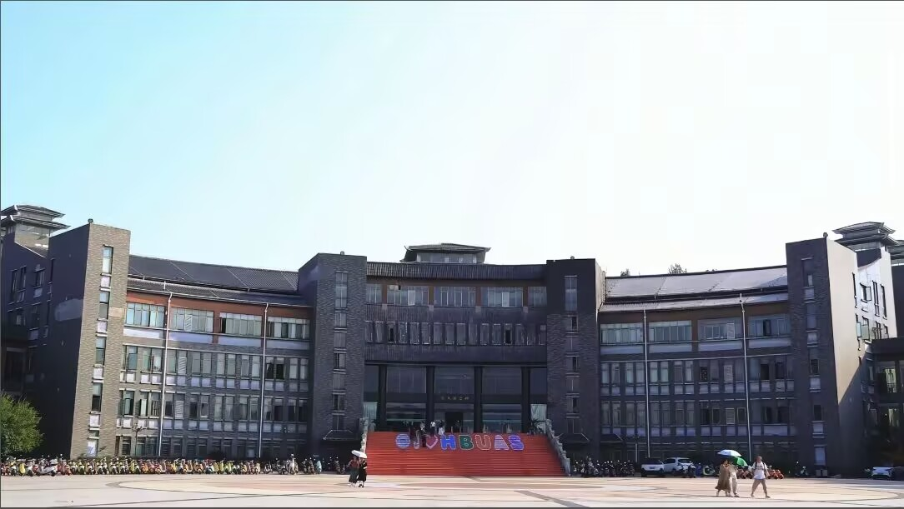
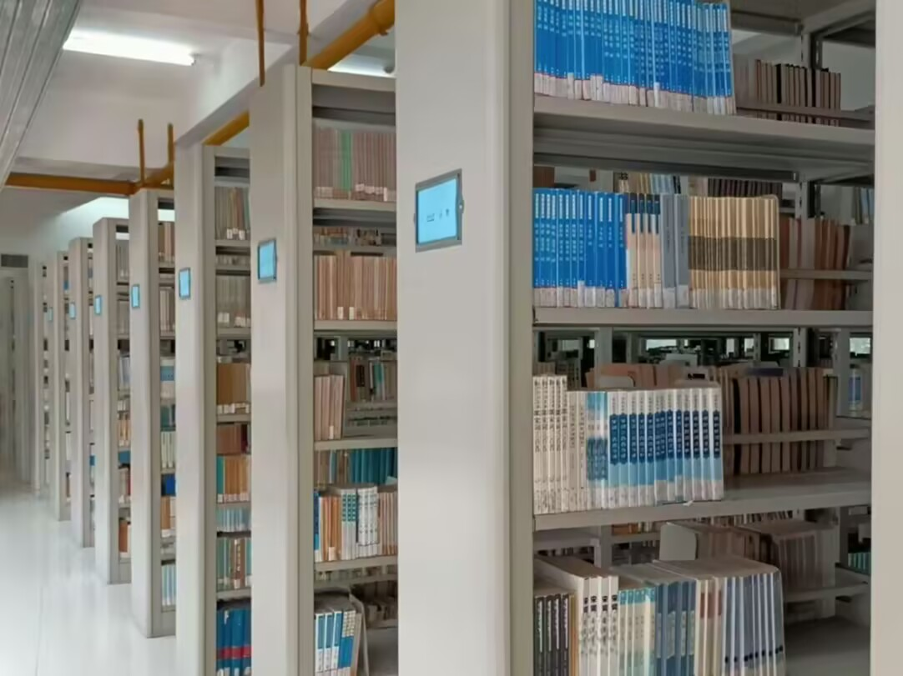
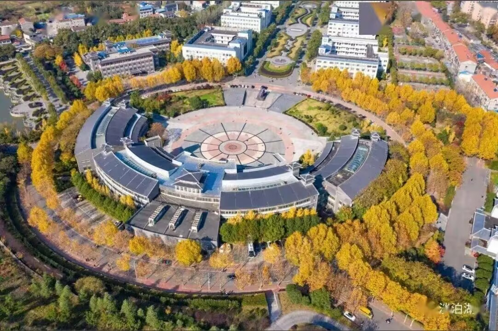
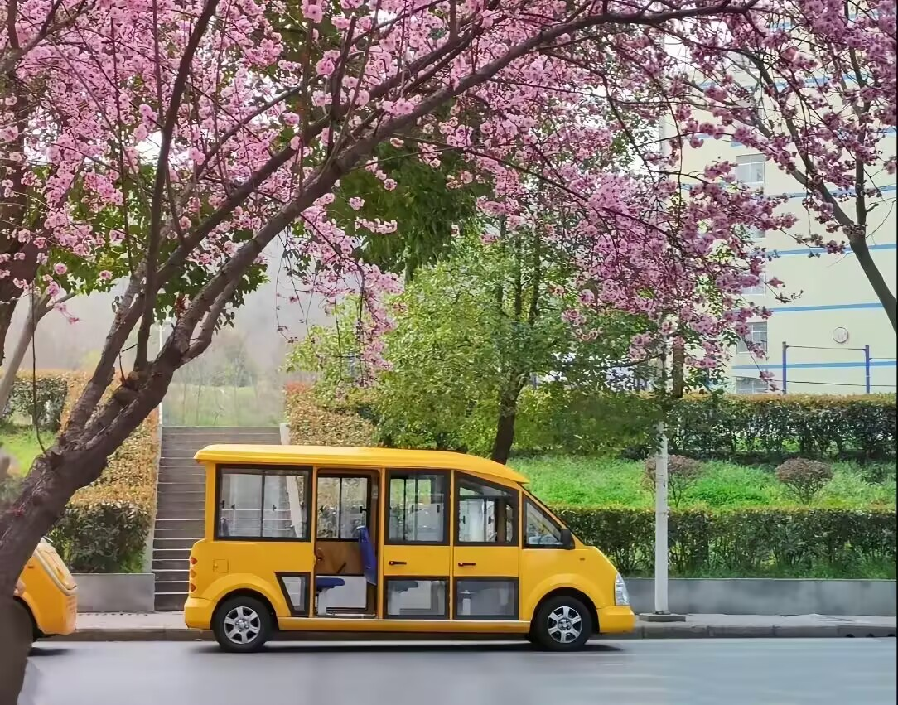
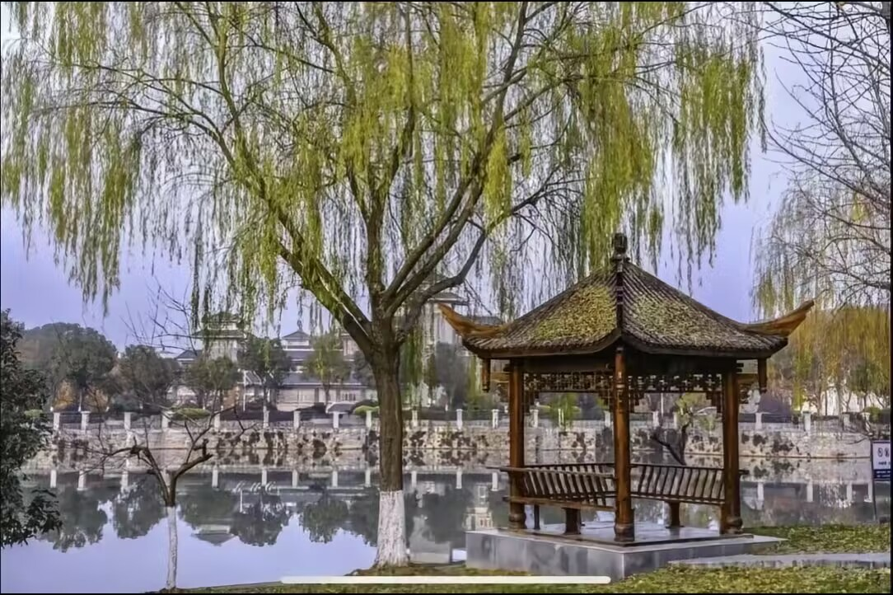

三顾广场
三顾广场是校园最具代表性的校园景观，其设计灵感源自襄阳著名的历史典故——刘备三顾茅庐。广场中央矗立着主题雕塑，寓意着求贤若渴、尊师重道的精神传承。广场周围绿树成荫，设有休闲长椅和文化展示栏，是师生课余休憩、社团活动的热门场所。
每逢重大节日和校园活动，三顾广场都会举办各类文化庆典和艺术表演，成为展示校园文化的重要窗口。夜晚的广场灯光璀璨，更是别有一番风味。
标志性景点
图书馆
图书馆是校园的学术地标，建筑风格庄重大气，内部设施现代化。图书馆馆藏图书超过200万册，涵盖文、理、工、管等多个学科门类，同时拥有丰富的电子资源和数据库。
馆内设有多个功能区域：一楼为综合阅览区，二楼为专业图书区，三楼为电子阅览室和学术报告厅，四楼为自习室。图书馆全年开放，为师生提供安静舒适的学习环境。每逢考试季，图书馆更是座无虚席，是学子们求知问学的理想殿堂。
学术地标
古隆中校区风光
校园坐落于历史文化名城襄阳，毗邻著名的古隆中风景区。校园依山傍水，绿树环绕，四季景色各异。春天樱花盛开，夏日绿荫如盖，秋季银杏金黄，冬日雪景如画。
校园内保留了大量原生植被，人工湖碧波荡漾，小桥流水与现代化建筑相映成趣。漫步校园，既能感受到浓厚的历史文化氛围，又能体验到现代大学校园的活力与朝气。古隆中校区独特的地理位置，使得校园与自然山水融为一体，被誉为"山水校园"。
自然风光体育馆与运动场
校园体育设施完善，体育馆内设有标准篮球场、羽毛球场和乒乓球室，可容纳数千名观众。室外拥有标准400米塑胶田径场、足球场以及多个网球场和排球场。
体育馆每年承办校内外多项体育赛事，是学校体育教学和课外锻炼的主要场所。课余时间，各类运动场地免费向师生开放，是强身健体、释放压力的好去处。傍晚时分，运动场上挥洒汗水的身影，构成了校园最生动的风景线。
运动休闲
樱花大道
校园内的樱花大道是每年春天最令人期待的景点。大道两侧种植了数百棵樱花树，每年三月至四月间，樱花竞相绽放，粉白色的花海如梦如幻，吸引无数师生和市民前来观赏。
樱花盛开时节，学校还会举办樱花文化节，组织摄影比赛、诗歌朗诵和文艺表演等活动。花瓣随风飘落，铺满整条大道，漫步其中仿佛置身于童话世界，成为校园最浪漫的风景。
季节景观
校园人工湖
校园人工湖位于学校中心区域，湖水清澈，碧波荡漾。湖畔垂柳依依，湖中锦鲤嬉戏，是师生休闲散步的首选之地。湖上建有景观拱桥，连接教学区与生活区，既实用又美观。
清晨，湖畔是晨读的好地方；傍晚，夕阳映照湖面，金光粼粼，美不胜收。湖边还设有观景平台和休憩亭，四季景色各有千秋，是校园摄影爱好者的取景胜地。
休闲景观